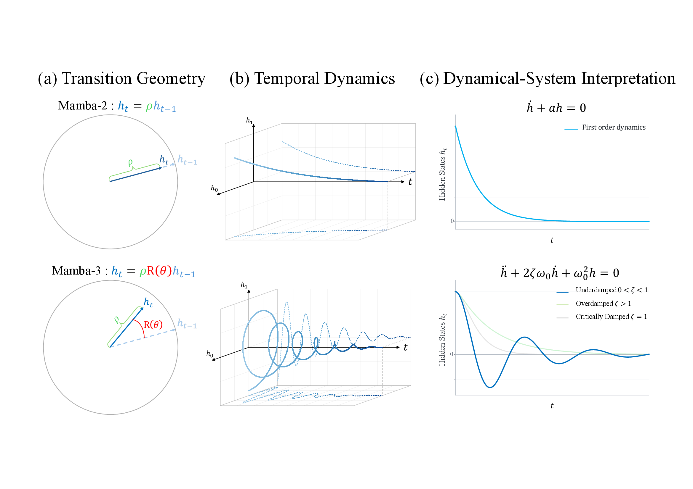
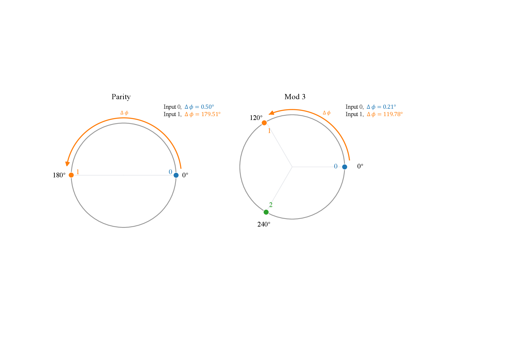
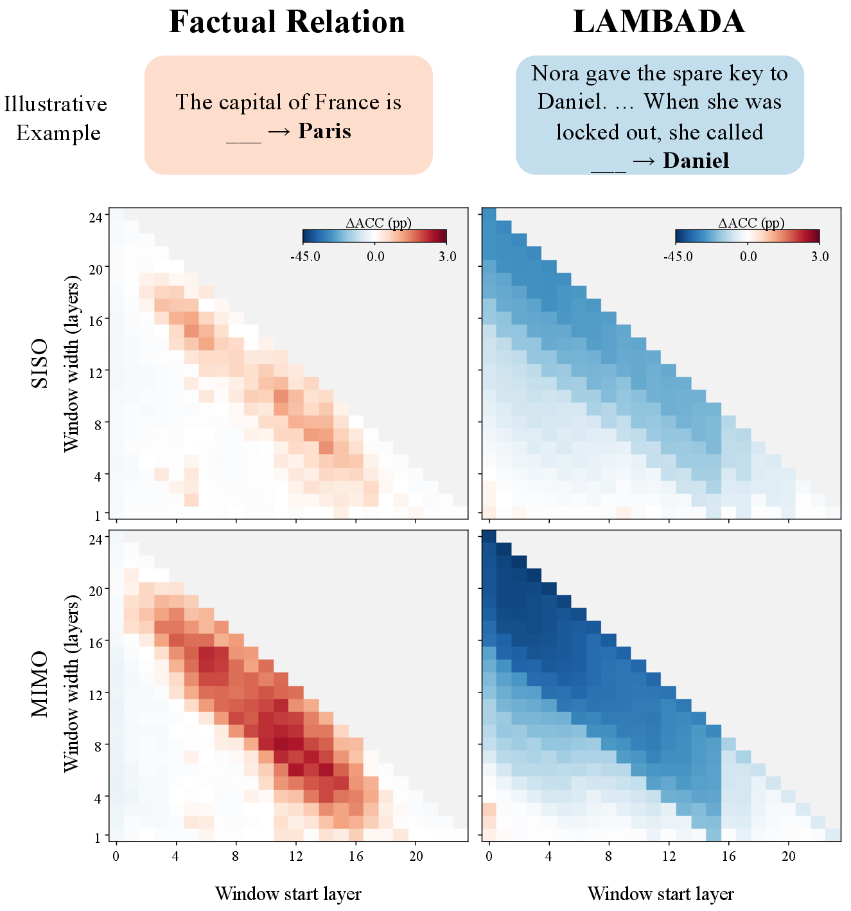
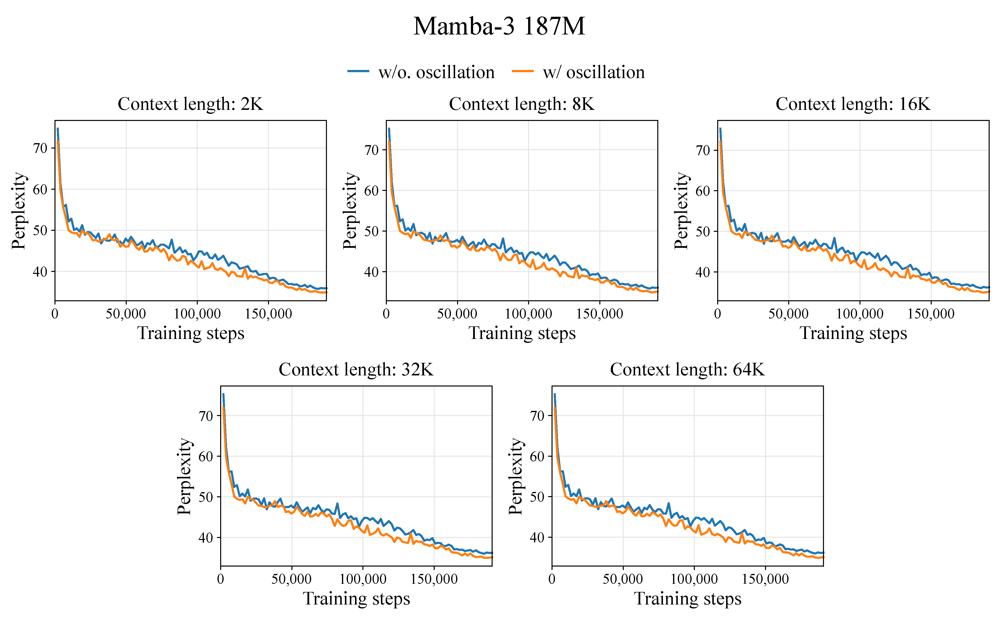
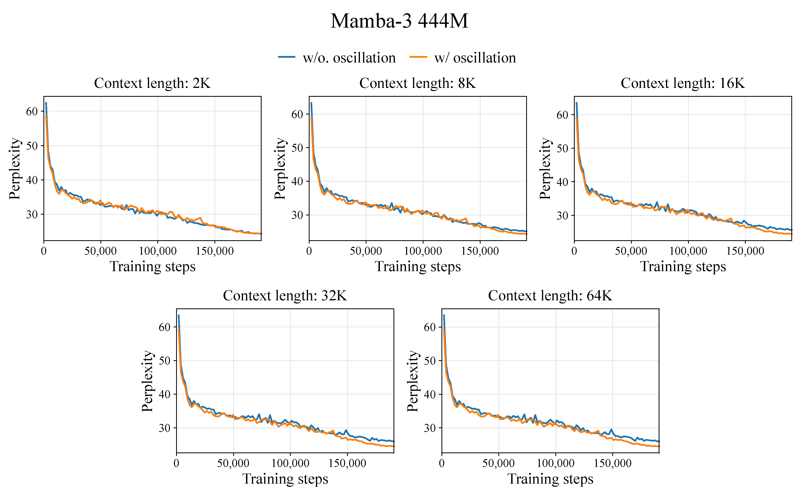

Introduction
Mamba-3 introduces input-dependent rotations into recurrent state updates, but their contribution beyond state retention remains unclear. We interpret these rotations as underdamped second-order dynamics, providing a framework for investigating the role of oscillation in sequence modeling.
Through controlled comparisons, we find that underdamped dynamics outperform non-oscillatory damping regimes on state-tracking tasks, and that adapting phase to incoming tokens matters for these tasks. In pretrained language models, removing phase affects context-dependent prediction on LAMBADA much more strongly than factual relation prediction. Pretraining models with and without oscillation at 187M and 444M parameters shows lower long-context perplexity with oscillation at both scales, with improved average downstream scores at 444M and comparable performance at 187M. Finally, phase interventions and state measurements suggest that learned rotations regulate how retained history combines with new updates, while compatible phase coordinates between writing and readout support accurate prediction. Together, these results identify oscillation as a useful mechanism for recurrent computation beyond state retention.
Oscillatory dynamics are not brand new to sequence modeling: prior work has explored second-order and oscillatory recurrent systems. This post focuses on our findings about what oscillation contributes in Mamba-3, rather than offering a comprehensive review of related work. We will discuss earlier approaches and their connections in a separate blog post (if there's no link here yet, I'm still writing it 😂 — apologies for any relevant work not acknowledged here!). We hope this blog leaves you with two takeaways:
- Oscillation can support state tracking and long-context prediction by shaping how information evolves, accumulates, and is read out. Mamba-3's input-dependent rotations provide one way to realize underdamped state dynamics.
- Oscillatory dynamics offer a useful design perspective for recurrent sequence models, including SSMs and linear attention. Their broader benefits remain a question for further investigation.

Oscillatory Dynamics: An Intuition
To understand what rotation contributes, we first separate the amount of retained information from its direction.
A recurrent model compresses a growing sequence into a fixed-size state. Much of the discussion around this memory focuses on retention: what enters the state, what gets forgotten, and how long a signal survives. But two states can have exactly the same magnitude and still point in different directions. That difference can change how the next update combines with the past.
Mamba-3 introduces input-dependent rotations into its recurrent transitions. Imagine an arrow representing a pair of state coordinates. Decay shortens the arrow; rotation turns it. Repeated decay produces contraction. Repeated decay and rotation produce a spiral. Our question is whether this turning motion contributes something useful beyond retention.
Same retention, different direction
Interactive intuitionBoth trajectories start at (1, 0) and take 80 steps with the same decay. Adjust the angle to see how the path changes while its final magnitude stays the same.
Both final state magnitudes: 0.199.
An illustrative homogeneous system with fixed coefficients, no input injection, and no learned parameters. This is a geometric demonstration, not an experimental result from Mamba-3.
A rotating state is a damped oscillator
For one rotary state pair, the homogeneous update has a simple form:
Here, ρ is the retention factor and R(θ) is a two-dimensional rotation. Over an interval of length Δ, let a = −log(ρ)/Δ and ν = θ/Δ. Holding these coefficients fixed within that interval, the discrete transition is the exact flow of a continuous decay–rotation system. Its first coordinate obeys:
This is a second-order damped oscillator. When a > 0 and ν ≠ 0, its damping ratio is between zero and one: the system is underdamped. Decay sets the envelope; phase sets the oscillation. The equivalence is interval-wise and concerns the homogeneous transition, not a claim that the entire input-driven model is a single fixed oscillator.
State Tracking: Testing Input-Dependent Oscillation
The oscillator interpretation motivates a controlled test. If oscillation itself is useful, it should help when we hold the state structure fixed and train different damping regimes on the same tasks.
Parity is a simple example. Each incoming 1 toggles the answer between two states; 0 leaves it unchanged. Counting ones modulo three requires a three-state cycle. A rotation can encode those transitions directly: approximately 180° for parity, or 120° for mod-3.

We compare underdamped, critically damped, and overdamped variants within a shared second-order framework. The underdamped variant outperforms the non-oscillatory alternatives on all three state-tracking tasks. The gap is especially pronounced on Parity and Mod 3; on Arithmetic without Brackets, underdamped dynamics achieve 95.68% scaled accuracy, compared with 81.60% for the overdamped variant.
| Dynamics | Parity | Mod-3 | Arithmetic without brackets |
|---|---|---|---|
| Overdamped | 3.27 | 0.58 | 81.60 |
| Critically damped | 3.22 | 0.32 | 1.97 |
| Underdamped (Mamba-3) | 100.00 | 95.26 | 95.68 |
Models are evaluated at sequence length 224 after a training curriculum whose maximum length grows to 160. These are scaled accuracies, not raw accuracy percentages.
The rotation comparisons further show that data dependence matters: Mamba-3 substantially outperforms variants with fixed or removed rotations across all three tasks. Effective state tracking benefits from both oscillatory dynamics and the ability to adapt phase to incoming tokens.
Phase Removal: Context-Dependent Prediction
Having tested input-dependent oscillation on state tracking, we next ask where language models rely on learned phase. We intervene in official pretrained 1.5B Mamba-3 models. Setting the phase to zero within consecutive layer windows lets us compare two tasks: factual relation prediction on Relation and context-dependent word prediction on LAMBADA. The contrast reveals where the model relies on its learned rotations.

Pretraining and Long-Context Generalization
Phase removal reveals reliance in an already-trained model. To test whether oscillation also helps when models learn from scratch, we train Mamba-3 MIMO variants with and without oscillation from scratch at 187M and 444M parameters. Each model sees 100B FineWeb-Edu tokens at a 2K training context. We then test whether the models can use longer contexts, including PG-19 windows up to 64K.
Length generalization across datasets


Oscillatory variants achieve lower PG-19 perplexity beyond the training context at both scales. At 187M, they also have lower perplexity on CodeParrot, TriviaQA, and SlimPajama, but higher perplexity on MATH-Hard. At 444M, they have lower perplexity on all four additional datasets across the evaluated lengths. The differences beyond 2K are most apparent on CodeParrot and TriviaQA, while those on SlimPajama remain small.
PG-19 throughout pretraining · 187M


At the end of training, the oscillatory variant achieves lower perplexity at every evaluated context length, with the gap generally becoming more visible at longer contexts.
PG-19 throughout pretraining · 444M


At the end of training, the oscillatory variant achieves lower perplexity at every evaluated context length. The separation becomes substantially more pronounced at longer contexts, particularly from 16K to 64K.
Does Oscillation Help Language Modeling?
Comparing models without and with oscillation:
- 187M: Lower perplexity; downstream performance roughly unchanged.
- 444M: Lower perplexity; standard average accuracy 50.18 → 51.08.
- 444M, LongBench-E: Average score 10.61 → 13.22.
View full results: language benchmarks and LongBench-E
Standard language modeling and downstream evaluation
Both oscillatory variants achieve lower FineWeb-Edu and LAMBADA perplexity. The reported average downstream accuracy remains comparable at 187M (43.43 with oscillation versus 43.63 without) and improves at 444M (51.08 versus 50.18).
↓ means lower is better; ↑ means higher is better. Accuracy values are percentages; normalized accuracy corresponds to acc_n in the paper. Bold marks the better result within each model size. On narrow screens, scroll the table horizontally.
| Model / dynamics | Language modeling | Downstream evaluation | Aggregate | |||||||
|---|---|---|---|---|---|---|---|---|---|---|
| FineWeb-Edu PPL ↓ | LAMBADA PPL ↓ | LAMBADA Acc. ↑ | HellaSwag Acc_n ↑ | PIQA Acc. ↑ | ARC-Easy Acc. ↑ | ARC-Challenge Acc_n ↑ | WinoGrande Acc. ↑ | OpenBookQA Acc. ↑ | Avg. Acc. ↑ | |
| 187M · w/o oscillation | 16.32 | 38.04 | 31.73 | 40.86 | 67.41 | 60.73 | 28.84 | 53.83 | 22.00 | 43.63 |
| 187M · w/ oscillation | 16.18 | 32.97 | 33.59 | 41.24 | 67.03 | 61.28 | 25.85 | 51.62 | 23.40 | 43.43 |
| 444M · w/o oscillation | 12.68 | 18.38 | 41.01 | 52.40 | 70.62 | 69.02 | 32.94 | 57.06 | 28.20 | 50.18 |
| 444M · w/ oscillation | 12.60 | 17.19 | 42.83 | 52.65 | 71.65 | 70.45 | 35.15 | 56.83 | 28.00 | 51.08 |
LongBench-E: the full task breakdown
On LongBench-E, the variants perform comparably at 187M, scoring 9.53 with oscillation and 9.76 without. At 444M, oscillation increases the average score from 10.61 to 13.22. These results distinguish the improvements in language-modeling perplexity observed at both scales from the downstream gains observed at 444M.
Higher is better for every task; bold marks the better result within each model size. Task abbreviations follow the paper; full names are listed below the table. Scroll horizontally to view all columns on smaller screens. The aggregate scores are reproduced as reported in the manuscript.
| Model / dynamics | Synthetic | Summary | Single-doc QA | Multi-doc QA | Few-shot learning | Coding | Aggregate | |||||||
|---|---|---|---|---|---|---|---|---|---|---|---|---|---|---|
| PC | PR | GR | MN | MQA | QA | 2WM | HQA | SS | TR | TQA | LCC | RB | Avg. | |
| 187M · w/o oscillation | 5.96 | 6.07 | 7.75 | 9.17 | 9.62 | 4.37 | 6.71 | 5.24 | 7.87 | 12.67 | 10.63 | 20.25 | 20.57 | 9.76 |
| 187M · w/ oscillation | 5.56 | 6.64 | 8.93 | 9.25 | 10.02 | 4.13 | 6.25 | 4.34 | 9.02 | 8.67 | 12.47 | 18.32 | 20.36 | 9.53 |
| 444M · w/o oscillation | 5.96 | 7.19 | 8.37 | 10.52 | 10.71 | 5.28 | 7.29 | 5.13 | 10.36 | 11.00 | 19.29 | 19.58 | 17.19 | 10.61 |
| 444M · w/ oscillation | 3.57 | 5.95 | 8.50 | 10.23 | 11.38 | 5.06 | 8.79 | 5.95 | 19.61 | 18.33 | 21.56 | 28.58 | 24.31 | 13.22 |
PC: Passage Count; PR: Passage Retrieval-en; GR: GovReport; MN: MultiNews; MQA: MultiFieldQA-en; QA: Qasper; 2WM: 2WikiMQA; HQA: HotpotQA; SS: SAMSum; TR: TREC; TQA: TriviaQA; LCC: Long Code Completion; RB: RepoBench-P.
Long-Context Phase Interventions
The pretraining results establish the benefits of oscillation under controlled training. We now return to pretrained 1.5B models to examine how prediction depends on the structure of their learned phase.
On long-context PG-19, we remove phase, reverse its direction, or shuffle phase increments across rotary pairs. Shuffling preserves the set of increments at each head and token, but changes which state pair receives each one. This tests whether the assignment of phase to state coordinates matters.
| Intervention | 1.5B SISO | 1.5B MIMO |
|---|---|---|
| Native model | 20.60 | 20.52 |
| Decay permutation | 125.27 (6.08×) | 24.89 (1.21×) |
| Phase shuffle | 149.37 (7.25×) | 65.72 (3.20×) |
| Phase removal | 851.49 (41.33×) | 309.36 (15.08×) |
| Phase reversal | 1526.52 (74.10×) | 73.89 (3.60×) |
SISO and MIMO denote single-input/single-output and multi-input/multi-output variants. Interventions act across all layers and heads throughout each sampled window; evaluation scores its final 100 tokens.
These models rely on specific learned phase trajectories. Removing, reversing, or reassigning phase substantially worsens prediction, although the sensitivity differs across SISO and MIMO. The particularly large SISO reversal effect should not be generalized to every architecture or intervention.
These interventions reveal how pretrained models rely on learned phase. Models trained without oscillation can still extrapolate stably, so this reliance should not be confused with a universal requirement for oscillation.
State Accumulation: How Phase Changes Memory
The decay–rotation view suggests a mechanism: turning retained history changes how it combines with a new update. We examine how phase affects the combination of retained history and incoming updates using their cosine similarity and the RMS norm of the recurrent state. Larger cosine similarity indicates stronger directional alignment, favoring constructive accumulation; the RMS norm measures the resulting state magnitude.
| Model / context | History–update cosine similarity | State RMS norm | ||
|---|---|---|---|---|
| Native | Remove | Native | Remove | |
| SISO · 16K | 0.293 | 0.429 | 7.635 | 8.899 |
| SISO · 64K | 0.294 | 0.474 | 7.621 | 9.437 |
| MIMO · 16K | 0.241 | 0.488 | 10.073 | 12.022 |
| MIMO · 64K | 0.242 | 0.499 | 10.078 | 12.047 |
Removing phase increases both alignment and state magnitude at both context lengths in both models. These are state statistics, rather than accuracy scores.
The state measurements are consistent with this interpretation. At 64K in SISO, removing phase increases history–update cosine similarity from 0.294 to 0.474 and the RMS state norm from 7.621 to 9.437. MIMO shows the same qualitative pattern. These observations suggest that learned phase moderates constructive accumulation. They do not, by themselves, prove that state magnitude is the cause of every prediction error.
Writing and reading also need compatible phase coordinates. When we remove rotations only during the final 100 prediction steps, removing them from either the write vector or the readout vector hurts much more than removing them from both. Joint removal partly restores performance, but does not recover the native model. The preceding context was processed with native phases, so changing both sides still creates a mismatch with the accumulated state.
| Intervention | 1.5B SISO | 1.5B MIMO |
|---|---|---|
| Native | 20.60 | 20.52 |
| Remove B (writing) | 186.28 (9.04×) | 100.41 (4.89×) |
| Remove C (readout) | 250.90 (12.18×) | 117.68 (5.74×) |
| Remove both | 42.79 (2.08×) | 59.46 (2.90×) |
Parentheses give perplexity relative to the native model. Interventions apply across all layers during the final 100 tokens; the preceding context uses native phase.
Discussion
The dynamical perspective separates two roles that are easy to conflate in recurrent models. Decay determines how much of the past persists, while phase determines how that retained state evolves in direction and interacts with new information. In our experiments, this distinction helps explain why underdamped dynamics can support both state tracking and long-context prediction.
At the same time, these results have clear limits. The oscillator interpretation applies locally to frozen-coefficient transitions, and the benefits of learned rotation are not uniform across every model scale, task, or architecture. Oscillation should therefore be viewed as one useful dynamical mechanism, rather than a universal recipe for better memory.
The broader question is what other forms of state dynamics may be useful for sequence computation. Linear-attention and recurrent architectures already realize a range of spectral and dynamical regimes, including oscillatory ones. Instead of treating these transition rules as isolated architectural tricks, we can ask what dynamics they implement, what computations those dynamics enable, and how to design them deliberately.
Perhaps it is time to go back to dynamics. Differential equations give us a natural language for reasoning about how internal states evolve, and may offer a useful starting point for designing future SSMs, linear-attention models, and recurrent architectures.